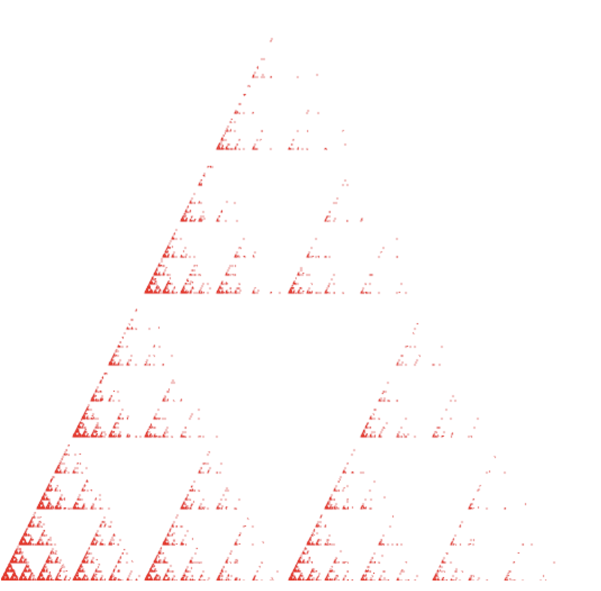
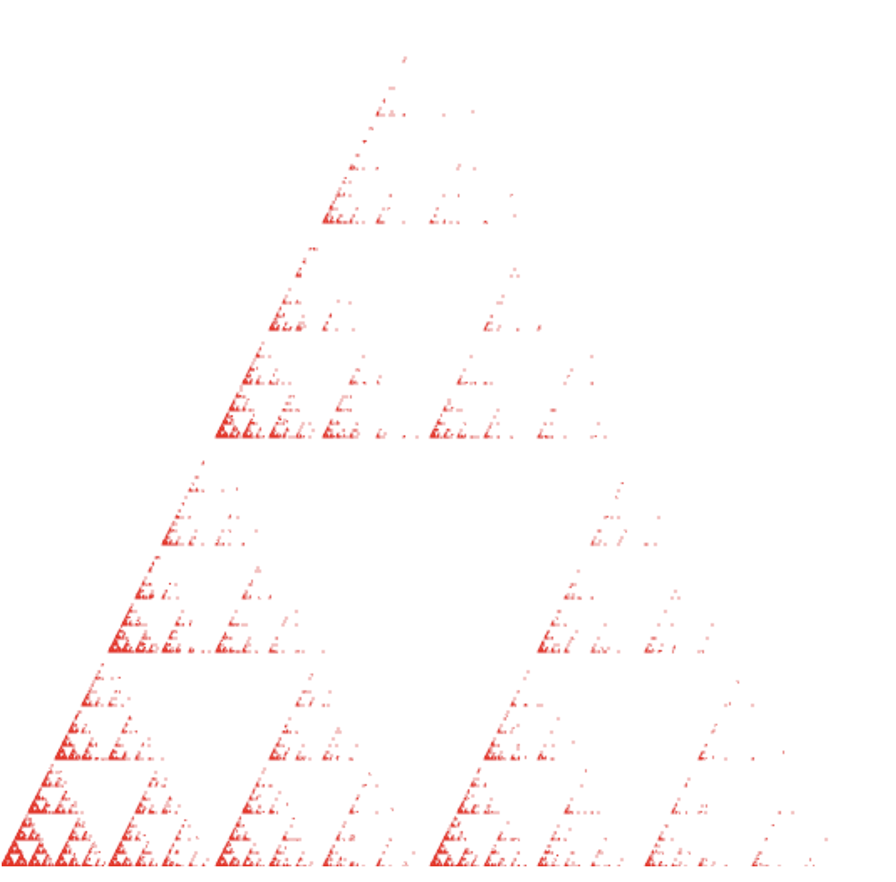

Dæmi 1
A: Í dæmi eitt A breytti ég gasket1, þ.a. fyrsti punkturinn er vel fyrir utan þríhyrninginn (100,100). Hér er mynd af efninu og hlekkurinn er Hér

B: Hér breytti ég líka kóðanum, þ.a. hér er mynd af dótinu útfrá hlekkurinn er hérna.
Nemandi: Ásdís Valtýsdóttir
A: Í dæmi eitt A breytti ég gasket1, þ.a. fyrsti punkturinn er vel fyrir utan þríhyrninginn (100,100). Hér er mynd af efninu og hlekkurinn er Hér
B: Hér breytti ég líka kóðanum, þ.a. hér er mynd af dótinu útfrá hlekkurinn er hérna.
Hér er vitnunin í hringinn.
Hér er vitnunin í L-ið. Ég breytti L-shape-fan sem notar TRIANGLE_FAN yfir í TRIANGLE-STRIP með því að nota fyrsta punktinn tvisvar. Þríhyrningarnrir voru: ABC, BCD, CDA, DAE og AEF. Síðan breytti ég einnig hámarksfjölda hnúta frá 6 yfir í 7.